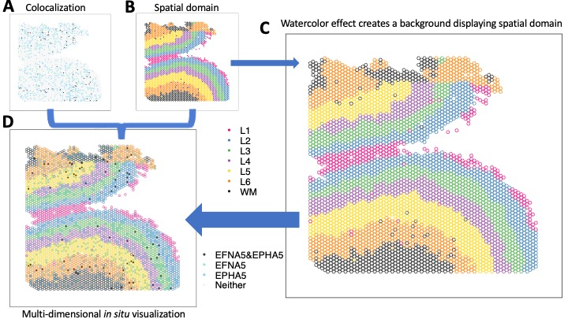
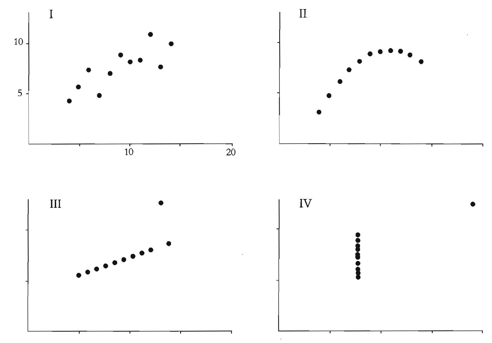

The goal of escheR is to create an unified multi-dimensional spatial visualizations for spatially-resolved transcriptomics data following Gestalt principles. Gestalt principles refer to a set of rules describing how humans perceive and interpret visual information and are commonly applied in art and designs. Our implementation is based on the state-of-art data visualization framework ggplot2 to map individual variables to different aesthetics to simultaneously display disparate variables, showing their relationship in a spatial context.

Our manuscript describing the innovative visualization is published in Bioinformatics Advances.
Installation
You can install the latest release version of escheR from Bioconductor. with using the following code will install version of the nnSVG package from Bioconductor. Additional details are shown on the Bioconductor page.
{r} if (!require("BiocManager", quietly = TRUE)) { install.packages("BiocManager") } BiocManager::install("escheR")
The latest development version can also be installed from the devel version of Bioconductor or from GitHub following
{r} if (!require("devtools")) install.packages("devtools") devtools::install_github("boyiguo1/escheR")
If you have R version before v4.3 and would like to install escheR, you can follow
{r} if (!require("devtools")) install.packages("devtools") devtools::install_github("boyiguo1/escheR@pre-R4.3")
WARNING: The purpose of having the branch
pre-R4.3is to allow users to useescheRbefore the formal release of R 4.3 and during the early stage of R 4.3 release. This branch will not update with any further development passingescheR v0.99.6. We recommend users to update their R versions up to date.
Frequently Asked Questions
-
Can I use
escheRonSingleCellExperimentobject?Yes. Starting from Version 1.2.0,
escheRsupports the visualization of dimensionality reduced embeddings of aSingleCellExperimentobject by providing values to the argumentdimred. For more information, please see Beyond Sequence-based Spatially-Resolved Data. -
How can I make plots to visualize dimensional reduced embeddings?
Yes, you can provide a string value to the
dimredargument. The string value should be included inreducedDimNames(object). For more information, please see Beyond Sequence-based Spatially-Resolved Data. -
Can I highlight only a subset of groups/levels for a categorical variables?
Yes, please find the example in Adjusting aesthetics.
-
Can
escheRbe directly applied toSeuratorGiottoobjects?Unfortunately,
SeuratorGiottoobjects can not be directly pipe intomake_escheRfunction. Instead, we provide a generic function that works with adata.frameobject as input. Please find example via Beyond Bioconductor Eco-system. -
How can I make a paneled figure containing multiple
escheRplots?You can compile and arrange individual plots by
escheRvia functions, e.g.cowplot::plot_grid,patchwork. Please find the example via Plot Multiple Samples. -
How can I choose color palettes for
add_fillandadd_groundto minimize interference?Interested user can explore the topic on bivariate color palette. The blog post by Jakub Nowosad and R package
biscalecould be helpful. -
Can I apply
escheRto plot image-based spatially resolved data?In principle,
escheRcan be used to visualize image-based spatially-resolved (SR) data. See examples via Image-based SpatialExperiment Object.Nevertheless, we are still optimizing the design principles for image-based SR data due to the difference in throughput compared to the sequence-based spatially resolved data. Optimization for image-based SR data visualization will be the main focus of our upcoming updates. We are open to working with new ideas and seek collaboration.
-
Can I plot polygons as each data points to show cell morphology?
Unfortunately, not now. We acknowledge it would be a very important feature to consider, and we are motivated to implement it in our future updates.
Citation
Our manuscript describing escheR is available via Bioinformatics Advances:
- Guo B, Huuki-Myers LA, Grant-Peters M, Collado-Torres L, Hicks SC (2023). “escheR: Unified multi-dimensional visualizations with Gestalt principles.” Volume 3, Issue 1, 2023, vbad179, https://doi.org/10.1093/bioadv/vbad179
Acknowledgement
The importance of visual analytics
 The panel of relational plots is from the book the visual display of quantitative information by Edward Tufte. This book inspired me to think more about the meaning of visual analytics in the era of computational science, and motivates me to think about statistical graphics design and its meaning.
Development tools
- Continuous code testing is possible thanks to GitHub actions through biocthis,
- The documentation website is automatically updated thanks to pkgdown.
- The code is styled automatically thanks to styler.
- The documentation is formatted thanks to devtools and roxygen2.